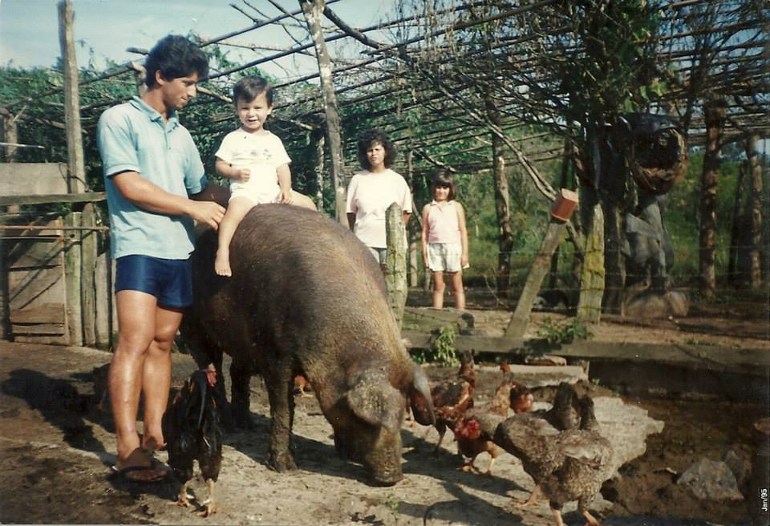

Gabriel Proença de Araujo

Esse sou eu e serei um grande programador
Me chamo Gabriel Proença de Araujo, nasci em Itapeva-SP, cidade do interior de São Paulo.
Sou especialista em Geprocessamento, com grande experiencia em QGIS (software OpenSource usado na produção de mapas)
Habilidades
- Vetorização de uso do solo.
- Processamento de imagens raster.
- Desenvolvimento de Material Cartografico estético e técnico.
- Montar em porcos